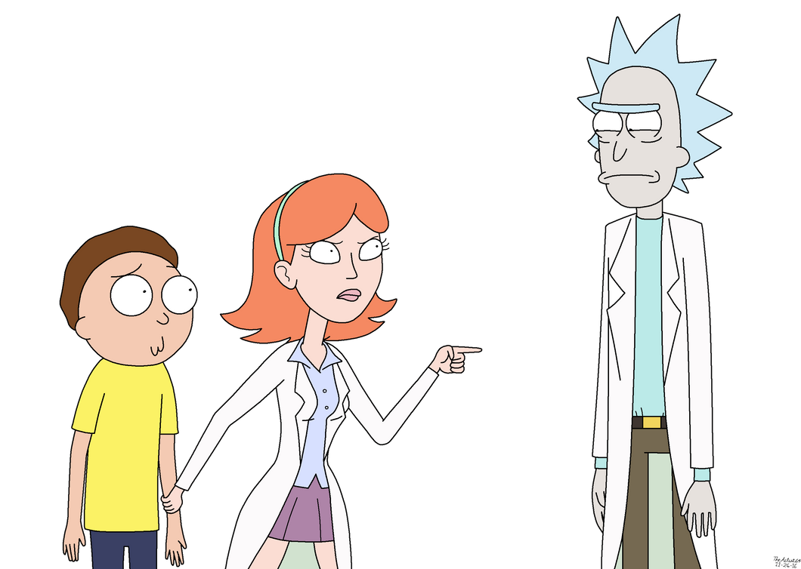

Morty is a genuine, flawed, and loveable character. His grandfather, Rick Sanchez, who is often referred to as a mad genius, is capable of interdimensional travel. Together they embark on wild adventures between different realities, sometimes facing conflicts along the way. If the odds aren't in their favor, Morty is never afraid to push back when confronted.
Morty is also a student of Harry Herpson High School. At 14 years old, he is infatuated with his classmate, Jessica, always trying to find the confidence to approach her. He is the son of Beth and Jerry Smith and brother to Summer Smith.